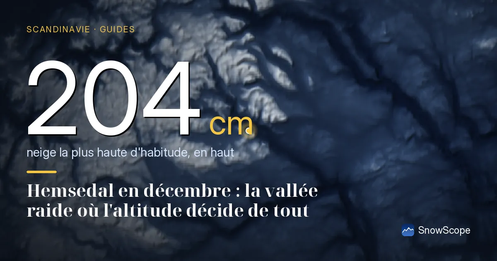

Hemsedal en décembre : la vallée raide où l'altitude décide de tout
Hemsedal est une station construite sur un terrain escarpé. En décembre, l'endroit où vous skiez importe bien plus que le moment. Un 15 décembre typique offre 32 cm à la base de 640 m, 70 cm à mi-montagne (1 039 m) et 106 cm au sommet (1 439 m). Cette différence d'altitude façonne tout le mois.
Consultez les prévisions neige en temps réel pour Hemsedal sur l'application SnowScopeHauteurs de neige, alertes poudreuse et carte 3D, gratuitement.
Trois zones, trois décembres
Avec 800 m de dénivelé, 48 km de pistes et 22 remontées, Hemsedal grimpe abruptement de la vallée à la crête. La base est le pari : seulement 57 % de nos 46 hivers ont atteint 30 cm là-bas la semaine du 15–21 décembre, et dans 3 de ces 46 hivers le sol était nu le 15 décembre.
Mi-montagne inverse les probabilités. À 1 039 m, 98 % des hivers ont atteint 30 cm mi-décembre, et même une année maigre (1 sur 10) affichait 48 cm le 15 décembre. Au sommet, chaque hiver de nos archives avait 30 cm ou plus chaque semaine de décembre.


Quand visiter chaque altitude
Si votre plan est mi-montagne jusqu'au sommet, presque n'importe quelle semaine de décembre convient. Le premier jour habituel avec 30 cm à mi-montagne est le 4 novembre, vous avez donc une longue fenêtre. La semaine de Noël est meilleure pour la profondeur : 85 % des hivers avaient 60 cm ou plus à mi-montagne à ce moment.
À la base, la patience paie. La première semaine de décembre n'atteint 30 cm que dans 46 % des hivers. Attendez la semaine de Noël, quand 65 % des hivers ont 30 cm ou plus. C'est une station pour ceux qui skient vers le haut, pas vers le village.
Les pentes supérieures tiennent bon
L'histoire de Hemsedal dans le temps est celle d'une divergence. Mi-montagne affichait en moyenne 75 cm en décembre pendant les 15 premiers hivers (1980–81 à 1994–95), et 66 cm pendant les 15 derniers (2011–12 à 2025–26). Chaque semaine de Noël des 15 derniers hivers avait encore 30 cm là-bas.
La base raconte une histoire plus difficile : elle est passée de 45 cm en moyenne à 23 cm. L'hiver dernier (2025–26) a atteint 61 cm à mi-montagne le 15 décembre mais seulement 27 cm à la base le même jour.
Prix des remontées et timing
Hemsedal pratique une tarification dynamique pour les forfaits journée, avec des prix fixés par date sur la boutique en ligne officielle de l'exploitant. Le 13 novembre 2026, aucun prix fixe n'était affiché, nous ne pouvons donc pas en citer un. Le schéma est familier : réservez en ligne, réservez tôt, et évitez la fenêtre de vacances de Noël si le coût vous préoccupe.
Les jours courts de décembre signifient que les débuts matinaux comptent. Planifiez vos meilleures pistes avant le midi, et prenez la remontée vers le bas à partir de mi-montagne si la base semble fine.
Hemsedal contre Geilo
Geilo se trouve sur le haut plateau au sud d'ici, plus bas et plus doux. Sa base (779 m) affichait 30 cm la semaine du 15–21 décembre dans 80 % des hivers—mieux que la base de Hemsedal—mais son sommet à 1 163 m est lui aussi plus bas, avec seulement 68 cm un 15 décembre typique. Le forfait journée de Geilo commence à 590 NOK (environ 56 EUR au taux de référence du 12 novembre).
Choisissez en fonction de ce que vous skiez : Hemsedal pour les pentes escarpées et la profondeur fiable en altitude, Geilo pour les pistes faciles et la neige plus bas.
Sécurité sur les pentes supérieures
Si vous vous aventurez hors-piste après une nouvelle neige, consultez l'avertissement avalanche norvégien sur varsom.no avant de partir. Les pentes supérieures retiennent bien la neige, mais cette même stabilité peut cacher des dangers en début de saison.
Conseils aux skieurs
- Skiez mi-montagne et au-dessus en début décembre. Ne retournez à la base qu'après la mi-mois ou après une nouvelle chute de neige.
- Réservez votre forfait en ligne dès que possible ; la tarification dynamique récompense les réservations anticipées.
- Commencez chaque jour par la première remontée pour maximiser la lumière du jour sur le terrain en altitude.
- Skieurs hors-piste : consultez le bulletin avalanche Varsom (varsom.no) avant de quitter la piste.
- Préparez-vous pour trois conditions différentes : neige fine à la base, profondeur moyenne à mi-montagne, et manteau épais au sommet.
À propos de ces chiffres
Les hauteurs de neige des stations sont la neige la plus épaisse sur le haut du domaine à la date indiquée ; ce sont des estimations pour une zone, pas une mesure en un point. Les prévisions peuvent changer. Consultez toujours le bulletin d'avalanche officiel avant le hors-piste.
Bulletins d'avalanche officiels: Varsom (NVE)
Citer ce bulletin
Pour la recherche, l'enseignement ou la presse : chiffres et graphiques réutilisables librement sous CC BY 4.0 avec cette citation.
SnowScope (2026), Hemsedal en décembre : la vallée raide où l'altitude décide de tout, https://snowscope.app/blog/fr/2026/11/hemsedal-december-skiing-snow-depth-price.html, consulté le 2026-11-14
SnowScope (Atlas Labs). (2026, November 14). Hemsedal en décembre : la vallée raide où l'altitude décide de tout. SnowScope snow reports. https://snowscope.app/blog/fr/2026/11/hemsedal-december-skiing-snow-depth-price.html
BibTeX
@misc{snowscope2026hemsedaldecemberskiingsn,
author = {{SnowScope (Atlas Labs)}},
title = {Hemsedal en décembre : la vallée raide où l'altitude décide de tout},
year = {2026},
month = nov,
howpublished = {\url{https://snowscope.app/blog/fr/2026/11/hemsedal-december-skiing-snow-depth-price.html}},
note = {Published 2026-11-14 13:29 UTC; accessed 2026-11-14}
}· CC BY 4.0 · Méthodes, données et outils →
Hemsedal : neige et température selon l'altitude, cet hiver vs l'hiver dernier (outils) →
Suivre Hemsedal
Gratuit : un message quand la neige arrive, et la météo chaque matin.